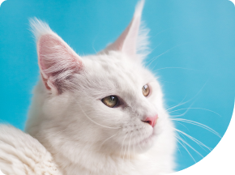

<section class="whenSection">
  <div class="container">
    <h3 class="title title-withDot">Когда стоит обратиться в клинику ?</h3>
    <p class="text">
      Мы круглосуточно на связи и готовы оказать качественную медицинскую помощь
      вашему любимцу в любое время суток
    </p>
    <div class="whenSection__row">
      <div class="whenSection__left">
        
        
        
      </div>
      <div class="whenSection__right">
        <div class="whenSection__item">Вялое состояние</div>
        <div class="whenSection__item">Отсутсвие аппетита</div>
        <div class="whenSection__item">Обильные выделенияиз глаз/носа/ушей</div>
        <div class="whenSection__item">
          Выделения из органов моче-половой системы
        </div>
        <div class="whenSection__item">
          Кашель (часто похож на позывы к рвоте)
        </div>
        <div class="whenSection__item">Кровотечения</div>
        <div class="whenSection__item">Зуд</div>
        <div class="whenSection__item">Постоянное «мотание» головой</div>
        <div class="whenSection__item">Хромота</div>
        <div class="whenSection__item">Беспричинная агрессия</div>
        <div class="whenSection__item">Бледные слизистые оболочки</div>
        <div class="whenSection__item">Приступы различной этиологии</div>
        <div class="whenSection__item">Повышенная жажда</div>
        <div class="whenSection__item">Проблемыс мочеиспусканием</div>
        <div class="whenSection__item">
          Повышеная температура (измеряется ректально)
        </div>
        <div class="whenSection__item">Диарея, жидкий стул, запор</div>
        <div class="whenSection__item">Рвота</div>
        <button class="button whenSection__allButton">
          смотреть все симптомы
        </button>
        <div class="fullWidth">
          <button class="button whenSection__linkButton">
            Записаться на приём
          </button>
        </div>
      </div>
    </div>
  </div>
</section>
